Тема, мета і постановка задачі
Тема: ВИКЛЮЧНІ СИТУАЦІЇ.
Мета: придбати практичні навички роботи з виключними ситуаціями, які виникають при роботі програми.
Постановка задачі:
До програмного коду попередніх лабораторних робіт добавити та описати:
- виключення, яке можуть виникати при некоректній авторизації;
- виключення, з застосуванням фільтрів виключення;
- виключення, які виникають при обробці масивів ;
- системні виключення;
- власні виключення;
- протестувати програму та зробити висновки;
Файлова структура
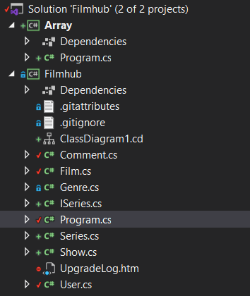Виключення при авторизації
Метод authorization
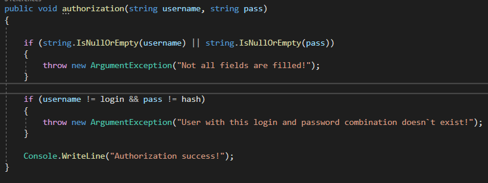Блок try-catch
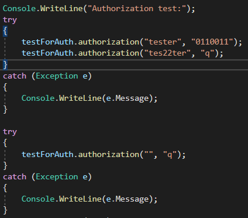Результат з try-catch
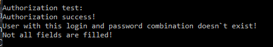Результат без try-catch
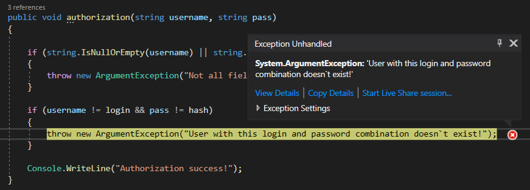Фільтри виключення
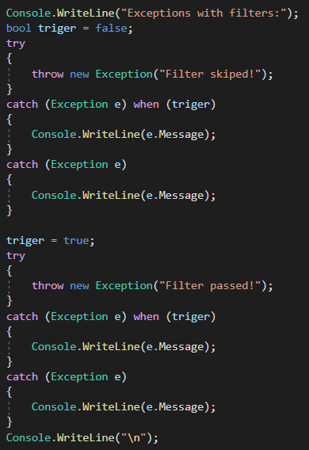Виключення при роботі з масивами
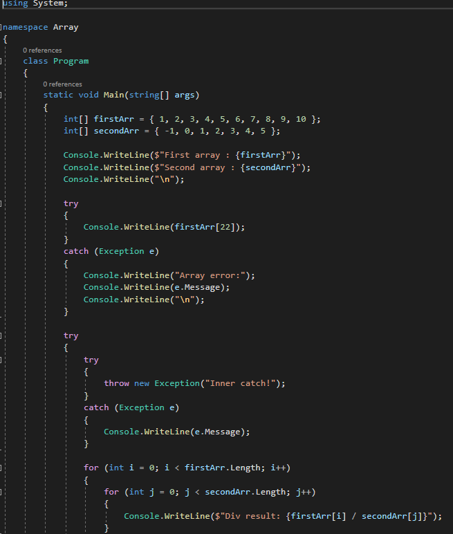 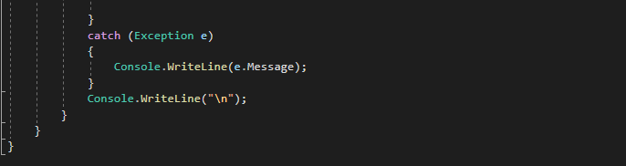Системні виключення
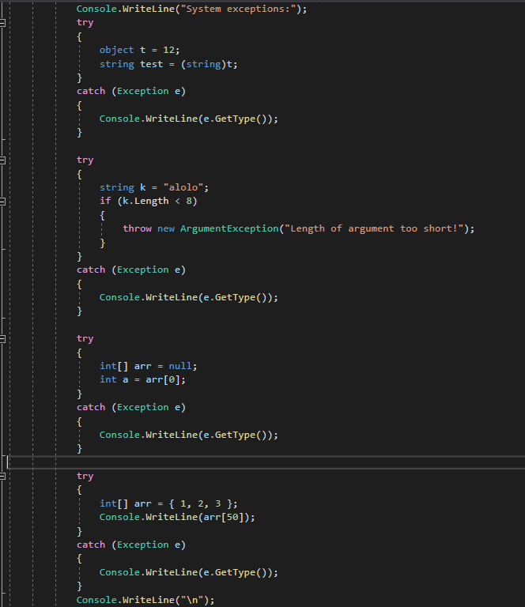Власні виключення
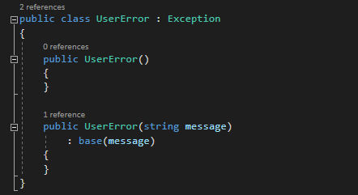 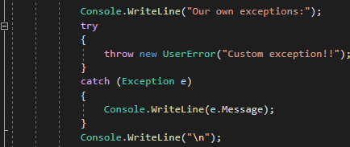Результат роботи
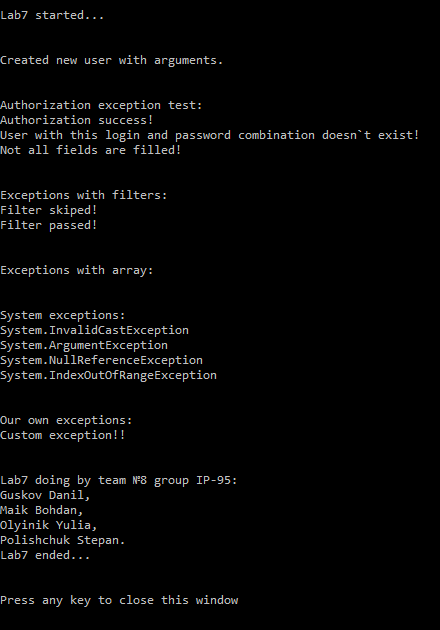 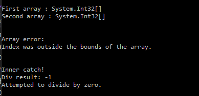Посилання на проект
https://github.com/UniversityTeam/filmhub-netВиконуваний файл
ЗавантажитиВисновки
Основною метою лабораторної роботи було вивчення та реалізація обробки як системних, так і власних виключень.